Субтитры: Русские и Английские | 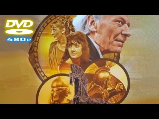 |
|---|---|
Субтитры: отсутствуют | 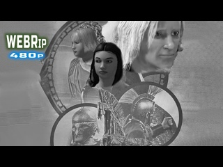 |
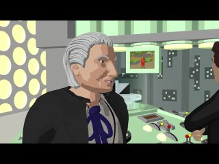 эп.1 - Храм тайн. Отрывок: Вступительная сцена (James Lee) | 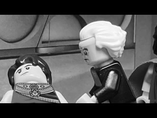 эп.4 - Конь разрушения. Отрывок: Финальная сцена (Finnholm) |
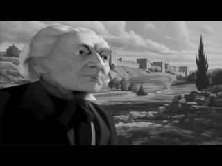 Тест AI‑анимации (SouthPark333Gaming) | 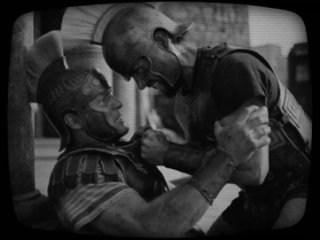 Прелюдия к серии: Кошмар начинается. AI‑реконструкция (Midjourney) |
| 1. Храм тайн 2. Маленький пророк, быстрое возвращение 3. Смерть шпиона 4. Конь разрушения | Все эпизоды утеряны * Имеется реконструкция |
|---|
| |
«Создатели мифов» переносят команду в осаждённую Трою: Доктор, принятый греками за Зевса, вынужден подыгрывать, чтобы спасти спутников. Вики попадает в Трою вместе с ТАРДИС, а Стивен пытается выручить Доктора, лавируя между лагерями. Кульминация строится вокруг троянского коня — Доктор фактически становится «создателем мифа», запуская легенду, которая переживёт века. Серия сплетает историю и фантастику, показывая, как одно решение может породить миф, и знаменует прощание с Вики и появление новой спутницы — Катарины.
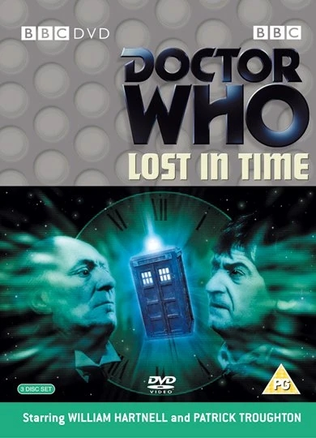 DVD (отрывки) - 2004 | 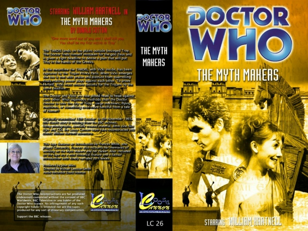 LC recon - сентябрь 2006 * Версия в нашей группе |
|---|
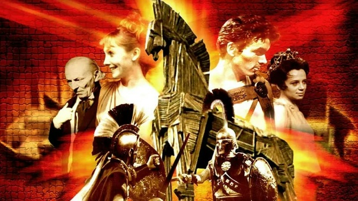
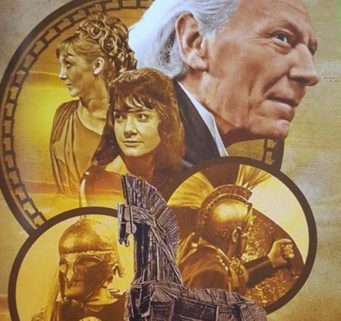
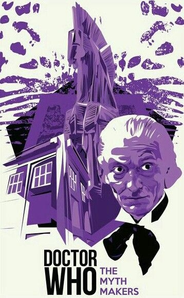
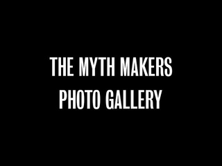